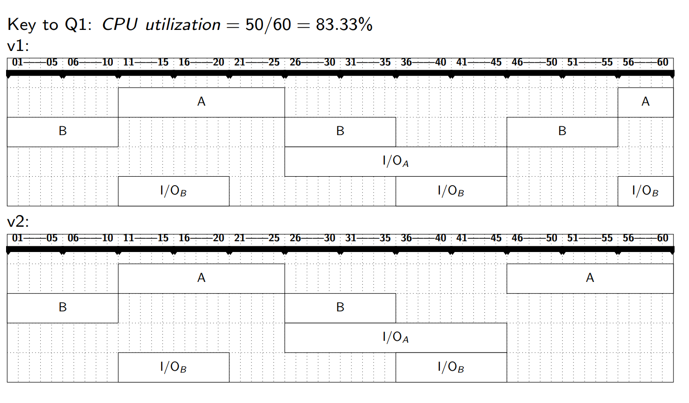
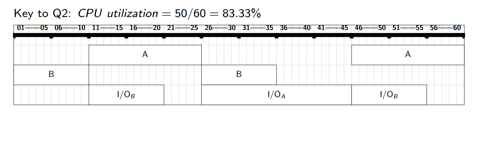

1. Warm-up Discussion 热身讨论
Key Questions 核心问题
-
What OS are you familiar with?
- Examples: Windows (GUI-focused), Linux (open-source), macOS (Unix-based), Android (mobile), iOS (Apple ecosystem).
-
你熟悉哪些操作系统？
- 例如：Windows（图形界面）、Linux（开源）、macOS（基于Unix）、Android（移动端）、iOS（苹果生态）。
-
What is the "best" OS?
- Subjective; depends on use case:
- Servers: Linux (stability, security).
- Developers: macOS/Unix-like (toolchain compatibility).
- Gaming: Windows (broad hardware support).
- Subjective; depends on use case:
-
最佳操作系统？
- 主观选择，取决于场景：服务器（Linux稳定）、开发（macOS工具链兼容）、游戏（Windows硬件支持广）。
2. What Operating Systems Do 操作系统的功能
Definition
- A program that acts as an intermediary between a user of a computer and the computer hardware.
- OS: A software layer between hardware and applications, managing resources and providing services.
- 操作系统：硬件与应用之间的软件层，管理资源并提供服务。
- Resource Allocator, Control Program
Goals 目标
- Execute user programs efficiently and conveniently.
- 高效、便捷地执行用户程序。
- Abstract hardware complexity (e.g., file systems hide disk details).
- 抽象硬件复杂性（如文件系统隐藏磁盘细节）。
- Optimize resource utilization (CPU, memory, I/O).
- 优化资源利用率（CPU、内存、I/O）。
Computer System Structure 计算机系统结构
| Layer 层次 | Examples 示例 |
|---|---|
| Hardware | CPU, RAM, Disk, GPU. |
| OS | Windows Kernel, Linux Scheduler. |
| Applications | Chrome, Word, Games. |
| Users | Humans, other computers (via network). |
- OS is a resource allocator
- Manages all resources.
- Decides between conflicting requests for efficient and fair resource use.
- OS is a control program.
- Controls execution of programs to prevent errors and improper use of the computer.
3. Computer-System Organization 计算机系统组织
Boot Process 启动流程
- Bootstrap Program (firmware) loads the OS kernel.
- 引导程序（固件）加载内核。
- Kernel initializes hardware (CPU, memory, devices).
- 内核初始化硬件（CPU、内存、设备）。
Von Neumann Architecture 冯·诺依曼架构
- Components:
- CPU (fetches/executes instructions).
- Memory (stores data/instructions).
- I/O devices (communication).
- 组件：
- CPU（取指/执行）、内存（存储数据/指令）、I/O设备（通信）。
Interrupts 中断
- Hardware Interrupt: Triggered by devices (e.g., keyboard input).
- 硬件中断：设备触发（如键盘输入）。
- Software Interrupt (Trap): Caused by errors or system calls (e.g., division by zero).
- 软件中断（陷阱）：错误或系统调用触发（如除零错误）。
Storage Hierarchy 存储层次
| Level 层级 | Speed 速度 | Volatility 易失性 | Example 示例 |
|---|---|---|---|
| Registers | Fastest | Volatile | CPU registers. |
| Cache | Very fast | Volatile | L1/L2 cache. |
| Main Memory | Fast | Volatile | RAM. |
| SSD/HDD | Slow | Non-volatile | Disk storage. |
4. Computer-System Architecture 计算机系统架构
Multiprocessor Systems 多处理器系统
- Symmetric (SMP): All CPUs perform tasks (e.g., modern PCs).
- 对称多处理：所有CPU执行任务（如现代PC）。
- Asymmetric (AMP): CPUs have dedicated roles (e.g., GPU for graphics).
- 非对称多处理：CPU分工明确（如GPU处理图形）。
Clustered Systems 集群系统
- High Availability: Failover support (e.g., cloud servers).
- 高可用性：故障转移（如云服务器）。
- High Performance Computing (HPC): Parallel processing (e.g., weather modeling).
- 高性能计算：并行处理（如气象建模）。
In Class Exercise

Answer


5. Operating-System Structure 操作系统结构
Historical Evolution 历史演进
- Batch Systems (1950s): No interaction (e.g., punch cards).
- 批处理系统：无交互（如打孔卡）。
- Multiprogramming (1960s): Multiple jobs in memory to maximize CPU usage.
- 多道程序：内存中驻留多个作业以提高CPU利用率。
- Timesharing (1970s): Interactive computing (e.g., UNIX).
- 分时系统：交互式计算（如UNIX）。
Key Concepts 核心概念
- Virtualization: Illusion of dedicated resources (e.g., virtual memory).
- 虚拟化：模拟独占资源（如虚拟内存）。
- Concurrency: Managing multiple tasks (race conditions, deadlocks).
- 并发：多任务管理（竞态条件、死锁）。
6. Operating-System Operations 操作系统操作
Dual-Mode Operation 双模式运行
- User Mode: Restricted access (e.g., apps cannot directly access hardware).
- 用户态：受限访问（如应用无法直接操作硬件）。
- Kernel Mode: Full privileges (e.g., OS manages devices).
- 内核态：全权限（如OS管理设备）。
Timer 定时器
- Prevents a process from monopolizing the CPU.
- 防止进程独占CPU。
7. Kernel Data Structures 内核数据结构
Essential Structures 基础结构
- Linked Lists: Process scheduling queues.
- 链表：进程调度队列。
- Hash Maps: Fast file system lookups.
- 哈希表：快速文件系统查询。
- Bitmaps: Track free/used memory blocks.
- 位图：跟踪内存块使用状态。
8. After Class Exercise 课后练习

- Interrupts vs. Traps:
- Interrupts are hardware-generated; traps are software-generated (e.g., system calls).
- 中断 vs. 陷阱：中断由硬件触发，陷阱由软件触发（如系统调用）。
- Intentional Traps: Yes, for system services (e.g., requesting file access).
- 故意触发陷阱：可以，用于请求系统服务（如文件访问）。